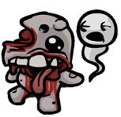

SOBRE :
A música em The Binding of Isaac: Rebirth, Afterbirth, Afterbirth † e Repentance foi criada
por Ridiculon. Essas trilhas sonoras podem ser adquiridas no Steam e na página do Bandcamp
do Ridiculon, além de estarem disponíveis no Spotify, contendo 32, 9, 4 e 20 faixas,
respectivamente. Nem todas as faixas ouvidas no jogo estão incluídas nos lançamentos da OST,
e algumas faixas na OST não aparecem no jogo ou não são utilizadas.
A maioria das faixas do andar principal tem uma variante mais pesada que toca quando há
inimigos ou chefes suficientes na sala. Na OST, essas variantes geralmente são ouvidas na
segunda metade de cada música. O instrumento adicionado é listado ao lado do nome de cada
faixa entre colchetes.
Músicas :
( a b a i x o )